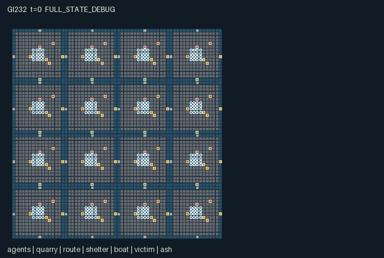

GI232 / SPATIAL
Basalt Archipelago Rescue
Release verification episode
Untrained uniform legal actions. Actual JAX state sampled along the full original episode; full-state debug camera. No human performance or learning claim.

Run this game
crucibles play --game 232
Start Python locally, then open the address printed by the terminal. Installation, multiplayer, takeover and keyboard controls →
Objective, rewards & ending
Exact task contract
{
"objective": "Rescue 32 stranded residents while crews choose how to allocate finite basalt among local shelters, causeways and boat capacity.",
"natural_termination": "Natural completion occurs exactly when all 32 resident saved flags are true. Otherwise H=896 truncates the ongoing world; no reward target is a release condition.",
"interaction": "Nearby bracing enables another actor to take and move a stretcher; finite stone supports communal crossings or private protection; boat cargo displaces passenger capacity and gate state changes physical reachability.",
"observation_access": "Actor entities use four nearest rows within L1 radius 6 plus self. Every non-agent group is visible within L1 radius 6. Home shelter/rescue ledger and deterministic clock/tide are known to that crew. There is no remote ash/boat/route state in a role's flat observation."
}Declared per-step reward bounds: -2 to 3. Observability: partially_observable.
Rules
- Move with actions 1–4; identical codes pilot a boat when an equipped pilot is aboard.
- Pick tools quarry stone. Hammer tools spend it on shelters or causeways; exchange tools and stone with adjacent workers.
- Causeways need level 2 and an open lift gate. Shoals are passable only during the low-tide half-cycle.
- A rescue-kit carrier needs another nearby actor choosing Brace to pick up or move a stretcher.
- Boats carry at most eight actors minus stone cargo; boarded actors follow the selected pilot's real movement.
- Ash grows every 32 steps. Hammer clearing takes three subsequent ticks; strong shelters protect nearby workers and routes.
- Bring a resident within one tile of any shelter and choose Deliver. All residents saved ends the episode.
- Role views expose local objects and four nearby actors. These rules and scene are authored; no replay has been executed.
Original mechanism document (historical status wording retained)
# Basalt Archipelago Rescue
Status: **AUTHORED_NOT_EXECUTED**. Candidate identity: game-v3-00232. Source split: train. No final test or previous candidate outcome was an input.
## Native contract and human controls
A=256, O=686, U=20, H=896. Every one of the 256 actor rows is independently controllable through one scalar int32 action. Ambient entities are not counted as agents. A human/AI/group assignment chooses the same native joint-action vector; no alternative UI dynamics are supplied. The source is the complete native kernel, and scene.json is complete declarative presentation data. JaxMARL adapter integration, actual keyboard/click controls, replay, animation, JIT/vmap, throughput, training and transfer remain unexecuted and unaccepted.
Movement is a cardinal one-cell proposal with boundary clipping. Multiple people may occupy a tile; this is an explicit broad-walkway abstraction. Visible objects and terrain govern interaction conditions. Masks describe capability/inventory permissions, not a promise that a distant or blocked operation succeeds. Out-of-range or mask-invalid codes become no-op deterministically. Spatially inapplicable legal attempts cost the stated work cost and change no targeted object. Joint actions are captured together; movement precedes ordered work, and work resolves actor IDs in ascending order. This tie rule is fixed before any execution and can affect scarce-resource competition.
Sixteen 16-person crews occupy a bounded 4 by 4 archipelago. Quarry, hammer, sail and rescue tools are transferable, so current equipment—not decorative character type—controls specialized actions. The fixed basalt map contains two-cell channels and shoal corridors; 24 raised causeway/lift gates connect neighboring islands. Causeway levels 2–3 plus an open lift gate allow channel crossing at either tide. Low tide alternates every 16 steps. Route damage removes one level every 64 steps unless a level-2 shelter lies within L1 distance 10. Shelters also protect workers within radius 4 from intense ash. Ash increases every 32 steps, blocks movement within radius 2 at intensity 3, and a hammer action within radius 4 starts a timer of 3; expiry removes two intensity units. These are persistent world changes, not visual substitutes.
A boat begins alongside each island. A single lowest-ID equipped pilot proposing movement controls each boat that step; other passengers follow. Boats move only over non-island tiles. Boarding, one-step adjacent-land disembarking and stone loading are physical operations. Passenger count never exceeds 8 minus cargo. Nearby support action 6 is necessary both to take a resident and to move while carrying one; the helper may belong to any crew. A stretcher follows its carrier's position. Delivery can use any shelter, so resources and assistance can cross crew boundaries. Signals are short-lived visible intention markers; they do not reveal remote world state.
## Action legend
- 0: Wait.
- 1: Walk or pilot north.
- 2: Walk or pilot east.
- 3: Walk or pilot south.
- 4: Walk or pilot west.
- 5: Quarry nearby stone with pick.
- 6: Brace a nearby stretcher carrier.
- 7: Build nearest causeway with hammer and stone.
- 8: Improve nearest shelter with hammer and stone.
- 9: Toggle nearby causeway lift gate.
- 10: Take nearby stretcher with rescue kit and a bracing partner.
- 11: Deliver carried resident at shelter.
- 12: Board nearby boat if capacity remains.
- 13: Leave boat onto adjacent island floor.
- 14: Give one stone to nearest adjacent actor.
- 15: Exchange tools with nearest adjacent actor.
- 16: Start delayed ash clearing with hammer.
- 17: Raise a visible three-step signal.
- 18: Load one stone into nearby boat.
- 19: Unload one boat stone into own inventory.
## Observation and role-view contract
Actor entities use four nearest rows within L1 radius 6 plus self. Every non-agent group is visible within L1 radius 6. Home shelter/rescue ledger and deterministic clock/tide are known to that crew. There is no remote ash/boat/route state in a role's flat observation.
The first scalar of the self block is actor ID/(A-1). Each nearest-actor slot begins with visibility then actor ID/(A-1); absent slots are all zero. Actor slots use the four smallest L1 distances with ID tie breaking; self is always visible through its self block. All other entity blocks use original entity order, visibility flag, normalized absolute x/y, then the listed attributes; hidden rows are zero. Terrain layout is fixed public knowledge, while changing object states use declared local visibility. The renderer must filter entity and event displays by role visibility; full-state diagnostics are a separate labeled view. Public scene metadata does not add policy input.
- [0, 13): Self: actor ID/255, x/63, y/63, crew/15, tool/3, stone/4, (boat+1)/16, carrying flag, signal/3, t/896, tidal phase 0/1, own-home rescued/32, own shelter level/3 (self).
- [13, 53): Four nearest visible actor slots, 10 each: visible, ID/255, x/63, y/63, crew/15, tool/3, stone/4, (boat+1)/16, carrying, signal/3 (local).
- [53, 117): 16 quarry rows, 4 each: visible, x/63, y/63, stock/32 (local).
- [117, 261): 24 route rows, 6 each: visible, x/63, y/63, level/3, gate open, current damage (local).
- [261, 341): 16 shelter rows, 5 each: visible, x/63, y/63, level/3, rescued/32 (local).
- [341, 421): 16 boat rows, 5 each: visible, x/63, y/63, cargo/4, passengers/8 (local).
- [421, 581): 32 resident rows, 5 each: visible, x/63, y/63, (carrier+1)/256, saved (local).
- [581, 661): 16 ash rows, 5 each: visible, x/63, y/63, intensity/3, clearing timer/3 (local).
- [661, 686): Row-major 5 by 5 terrain patch centered on actor, edge-clamped; tile code/2 (local).
## Rewards, bounds and persistent consequences
Every legal attempted work action (code >=5) costs its actor 0.01. A carrying movement attempt costs 0.005. A proposed position in unprotected intense ash costs 0.03. Each route damage event contributes a common loss of 0.02/24 to every actor that step. Delivering a resident pays the carrier 1 and distributes another 0.5 equally to the carrier's 16-person crew. Each actual stone-funded route/shelter increment distributes 0.05 equally to the builder's crew. Transfers, boarding, unloading and repeated toggles have no positive shaping reward. At most one resident can be carried/delivered by an actor and at most one funded construction increment can be performed by that actor per step; these facts contain the declared range. A shelter's rescued counter belongs to the delivery location; reward crew belongs to the delivering actor.
Rewards are float32[A]. Observations are explicitly float32[A,O]; normalized bounds are [0.0,1]. Declared reward bounds are [-2, 3], analytical containment bounds rather than empirical results or performance gates. Actor/group identity, positions, tool changes and real object levels bind to native state in manifest.json and scene.json; no scripted display transition substitutes for a kernel transition.
## Termination and declared source invariants
Natural completion occurs exactly when all 32 resident saved flags are true. Otherwise H=896 truncates the ongoing world; no reward target is a release condition. A live call advances t exactly once. Natural termination has priority at H. A terminal call is absorbing: all state and observation leaves, clock and terminal cause are preserved; reward is zero and every done row is true. There is no raw auto-reset.
All 256 actors remain independently active until joint termination. Positions stay in [0,63]^2. Quarry stock is 0..32, held stone 0..4, route/shelter/ash levels 0..3, clear/signal timers 0..3, boat cargo 0..4 and boat occupancy <=8-cargo. Each resident has at most one carrier and each actor at most one stretcher. Saved residents are inactive scene objects. Repeated stone transfers conserve stone outside quarry extraction and funded construction; no automatic resource reset occurs. People may share tiles; boats and stretchers use actual transition positions.
The manifest declares the complete fixed-key state tree. Numeric/bool state leaves use int32/float32/bool. PRNG keys remain external trajectory provenance and are not duplicated in state. The source's reset randomness is only the 16 reset ash intensities, each drawn as integer 0 or 1 from the supplied key; raw_step consumes no additional random draws. No signed-int or PRNG distribution substitution is made. Human-readable invariants above have not been numerically checked; the optional machine invariant list is empty to avoid inventing an unsupported invariant-check dialect.
## Prospective strategies and fixed diagnostics
Crews may build a durable raised route and protect it with shelter investment, or reserve stone for local ash protection and use tide windows/boats. Loading stone onto a boat trades transport inventory against room for other crews. Rescue teams can alternate leader movement and helper repositioning, while other workers maintain routes. The first script is a short source-reasoned rescue relay for actors 14 and 15; the second moves quarry stone from actor 0 to builder 1 and constructs a crossing. The pair removes only actor 14's first brace while preserving actor 15's pickup and the remaining literal movement prefix. The intended difference is resident ownership followed by coupled resident movement, not just the helper's action cost.
playthrough.json contains two complete literal joint-action arrays at seed 23207, plus one pair whose entire continuation differs in exactly one actor action at one step. All are UNEXECUTED_AUTHOR_HYPOTHESIS. Their finite lengths are diagnostic scopes, not claims of finishing the game. Conditions, delays and intended state changes are source reasoning; legality during rollout, effects, rewards, solvability and human usability remain unverified. There is no adaptive policy, seed search, measured effect size or expected-success threshold.
## Literal source evidence
- Crew topology and exact state: candidate.py:61 — `s = {'t': jnp.array(0, jnp.int32), 'done': jnp.array(False), 'terminated': jnp.array(False), 'terrain': terrain, 'pos': pos, 'active': jnp.ones((256,), jnp.bool_), 'tool': ids % 4, 'stone': jnp.zeros((256,), jnp.int32), 'aboard': jnp.full((256,), -1, jnp.int32), 'signal': jnp.zeros((256,), jnp.int32), 'carrying': jnp.zeros((256,), jnp.bool_), 'seen': jnp.zeros((256, 4), jnp.int32), 'agent_vis': jnp.zeros((256, 256), jnp.bool_), 'quarry_pos': center + jnp.array([-3, 0], dtype=jnp.int32), 'quarry_stock': jnp.full((16,), 32, jnp.int32), 'quarry_active': jnp.ones((16,), jnp.bool_), 'quarry_vis': jnp.zeros((256, 16), jnp.bool_), 'route_pos': routes, 'route_level': jnp.zeros((24,), jnp.int32), 'route_open': jnp.zeros((24,), jnp.bool_), 'route_damage': jnp.zeros((24,), jnp.bool_), 'route_active': jnp.ones((24,), jnp.bool_), 'route_vis': jnp.zeros((256, 24), jnp.bool_), 'shelter_pos': center + jnp.array([0, -3], dtype=jnp.int32), 'shelter_level': jnp.zeros((16,), jnp.int32), 'shelter_active': jnp.ones((16,), jnp.bool_), 'shelter_vis': jnp.zeros((256, 16), jnp.bool_), 'rescued': jnp.zeros((16,), jnp.int32), 'boat_pos': center + jnp.array([7, 0], dtype=jnp.int32), 'boat_cargo': jnp.zeros((16,), jnp.int32), 'boat_load': jnp.zeros((16,), jnp.int32), 'boat_active': jnp.ones((16,), jnp.bool_), 'boat_vis': jnp.zeros((256, 16), jnp.bool_), 'victim_pos': jnp.repeat(center, 2, axis=0) + jnp.tile(jnp.array([[2, 1], [3, 2]], jnp.int32), (16, 1)), 'victim_carrier': jnp.full((32,), -1, jnp.int32), 'victim_saved': jnp.zeros((32,), jnp.bool_), 'victim_active': jnp.ones((32,), jnp.bool_), 'victim_vis': jnp.zeros((256, 32), jnp.bool_), 'ash_pos': center + jnp.array([4, -4], dtype=jnp.int32), 'ash_level': jax.random.randint(key, (16,), 0, 2).astype(jnp.int32), 'ash_clear': jnp.zeros((16,), jnp.int32), 'ash_active': jnp.ones((16,), jnp.bool_), 'ash_vis': jnp.zeros((256, 16), jnp.bool_), 'event_rescue': jnp.zeros((256,), jnp.bool_), 'event_build': jnp.zeros((256,), jnp.bool_), 'event_transfer': jnp.zeros((256,), jnp.bool_)}`
- Local visibility and actual carrying flag: candidate.py:23 — `s['carrying'] = jnp.any(s['victim_carrier'][None, :] == jnp.arange(256, dtype=jnp.int32)[:, None], axis=1)`
- Tide, construction and lift reachability: candidate.py:104 — `passable = (tile == 1) | (tile == 2) & (s['t'] // 16 % 2 == 0) | bridge`
- Partner-dependent carrying: candidate.py:108 — `helpers = jnp.any((self.distance(s['pos'], s['pos']) <= 1) & (a[None, :] == 6) & (jnp.arange(256, dtype=jnp.int32)[:, None] != jnp.arange(256, dtype=jnp.int32)[None, :]), axis=1)`
- Finite boat capacity: candidate.py:152 — `board = (a[i] == 12) & (bd[b] <= 1) & (load < 8 - z['boat_cargo'][b])`
- Physical rescue pickup: candidate.py:142 — `pickup = (a[i] == 10) & (vd[v] <= 1) & eligible[v] & helpers[i]`
- Delayed ash clearing: candidate.py:169 — `clear = (a[i] == 16) & (ad[island] <= 4) & (z['ash_clear'][island] == 0)`
- Recipient-specific rewards: candidate.py:180 — `rew = rew.at[i].add(deliver.astype(jnp.float32))`
- Absorbing terminal state: candidate.py:191 — `n = jax.tree.map(lambda new, old: jnp.where(s['done'], old, new), n, s)`
## Provenance and limits
Only the 21 actual authorized input files in author_input_freeze.json were read. The controlling population/family237 input sets A and H. Older copied population notes were not read. No old source, result, IR, training/selection/heldout file, memory file, network, local model, remote model API or other author feedback was used. The inherited genre direction comes from this batch's independent_family_principles.json and design brief. No supplied upstream reference snapshot or upstream code was read or copied: Craftax mechanics and Pgx board APIs are not claimed as implementations, and PureJaxRL/Craftax PPO baselines are neither new game libraries nor replacements for the frozen learner.
Author-side checks are standard-library AST parsing, literal schema/shape declarations, JSON, byte lengths and SHA256 only. Supplied validator modules were read as input text and were not executed. No import of candidate.py, JAX, NumPy, reset, raw_step, observe or legal_actions occurred. This package establishes authored source/data identity only, not accepted R0/M0, numerical parity, learnability, strategic non-isomorphism, animation acceptance, scientific benefit or transfer.
Commands
Roles & abilities
agent_0 Crew 00; actor 000; initial quarry pick; individually controllable
agent_1 Crew 00; actor 001; initial construction hammer; individually controllable
agent_2 Crew 00; actor 002; initial pilot sail; individually controllable
agent_3 Crew 00; actor 003; initial rescue kit; individually controllable
agent_4 Crew 00; actor 004; initial quarry pick; individually controllable
agent_5 Crew 00; actor 005; initial construction hammer; individually controllable
agent_6 Crew 00; actor 006; initial pilot sail; individually controllable
agent_7 Crew 00; actor 007; initial rescue kit; individually controllable
agent_8 Crew 00; actor 008; initial quarry pick; individually controllable
agent_9 Crew 00; actor 009; initial construction hammer; individually controllable
agent_10 Crew 00; actor 010; initial pilot sail; individually controllable
agent_11 Crew 00; actor 011; initial rescue kit; individually controllable
agent_12 Crew 00; actor 012; initial quarry pick; individually controllable
agent_13 Crew 00; actor 013; initial construction hammer; individually controllable
agent_14 Crew 00; actor 014; initial pilot sail; individually controllable
agent_15 Crew 00; actor 015; initial rescue kit; individually controllable
agent_16 Crew 01; actor 016; initial quarry pick; individually controllable
agent_17 Crew 01; actor 017; initial construction hammer; individually controllable
agent_18 Crew 01; actor 018; initial pilot sail; individually controllable
agent_19 Crew 01; actor 019; initial rescue kit; individually controllable
agent_20 Crew 01; actor 020; initial quarry pick; individually controllable
agent_21 Crew 01; actor 021; initial construction hammer; individually controllable
agent_22 Crew 01; actor 022; initial pilot sail; individually controllable
agent_23 Crew 01; actor 023; initial rescue kit; individually controllable
agent_24 Crew 01; actor 024; initial quarry pick; individually controllable
agent_25 Crew 01; actor 025; initial construction hammer; individually controllable
agent_26 Crew 01; actor 026; initial pilot sail; individually controllable
agent_27 Crew 01; actor 027; initial rescue kit; individually controllable
agent_28 Crew 01; actor 028; initial quarry pick; individually controllable
agent_29 Crew 01; actor 029; initial construction hammer; individually controllable
agent_30 Crew 01; actor 030; initial pilot sail; individually controllable
agent_31 Crew 01; actor 031; initial rescue kit; individually controllable
agent_32 Crew 02; actor 032; initial quarry pick; individually controllable
agent_33 Crew 02; actor 033; initial construction hammer; individually controllable
agent_34 Crew 02; actor 034; initial pilot sail; individually controllable
agent_35 Crew 02; actor 035; initial rescue kit; individually controllable
agent_36 Crew 02; actor 036; initial quarry pick; individually controllable
agent_37 Crew 02; actor 037; initial construction hammer; individually controllable
agent_38 Crew 02; actor 038; initial pilot sail; individually controllable
agent_39 Crew 02; actor 039; initial rescue kit; individually controllable
agent_40 Crew 02; actor 040; initial quarry pick; individually controllable
agent_41 Crew 02; actor 041; initial construction hammer; individually controllable
agent_42 Crew 02; actor 042; initial pilot sail; individually controllable
agent_43 Crew 02; actor 043; initial rescue kit; individually controllable
agent_44 Crew 02; actor 044; initial quarry pick; individually controllable
agent_45 Crew 02; actor 045; initial construction hammer; individually controllable
agent_46 Crew 02; actor 046; initial pilot sail; individually controllable
agent_47 Crew 02; actor 047; initial rescue kit; individually controllable
agent_48 Crew 03; actor 048; initial quarry pick; individually controllable
agent_49 Crew 03; actor 049; initial construction hammer; individually controllable
agent_50 Crew 03; actor 050; initial pilot sail; individually controllable
agent_51 Crew 03; actor 051; initial rescue kit; individually controllable
agent_52 Crew 03; actor 052; initial quarry pick; individually controllable
agent_53 Crew 03; actor 053; initial construction hammer; individually controllable
agent_54 Crew 03; actor 054; initial pilot sail; individually controllable
agent_55 Crew 03; actor 055; initial rescue kit; individually controllable
agent_56 Crew 03; actor 056; initial quarry pick; individually controllable
agent_57 Crew 03; actor 057; initial construction hammer; individually controllable
agent_58 Crew 03; actor 058; initial pilot sail; individually controllable
agent_59 Crew 03; actor 059; initial rescue kit; individually controllable
agent_60 Crew 03; actor 060; initial quarry pick; individually controllable
agent_61 Crew 03; actor 061; initial construction hammer; individually controllable
agent_62 Crew 03; actor 062; initial pilot sail; individually controllable
agent_63 Crew 03; actor 063; initial rescue kit; individually controllable
agent_64 Crew 04; actor 064; initial quarry pick; individually controllable
agent_65 Crew 04; actor 065; initial construction hammer; individually controllable
agent_66 Crew 04; actor 066; initial pilot sail; individually controllable
agent_67 Crew 04; actor 067; initial rescue kit; individually controllable
agent_68 Crew 04; actor 068; initial quarry pick; individually controllable
agent_69 Crew 04; actor 069; initial construction hammer; individually controllable
agent_70 Crew 04; actor 070; initial pilot sail; individually controllable
agent_71 Crew 04; actor 071; initial rescue kit; individually controllable
agent_72 Crew 04; actor 072; initial quarry pick; individually controllable
agent_73 Crew 04; actor 073; initial construction hammer; individually controllable
agent_74 Crew 04; actor 074; initial pilot sail; individually controllable
agent_75 Crew 04; actor 075; initial rescue kit; individually controllable
agent_76 Crew 04; actor 076; initial quarry pick; individually controllable
agent_77 Crew 04; actor 077; initial construction hammer; individually controllable
agent_78 Crew 04; actor 078; initial pilot sail; individually controllable
agent_79 Crew 04; actor 079; initial rescue kit; individually controllable
agent_80 Crew 05; actor 080; initial quarry pick; individually controllable
agent_81 Crew 05; actor 081; initial construction hammer; individually controllable
agent_82 Crew 05; actor 082; initial pilot sail; individually controllable
agent_83 Crew 05; actor 083; initial rescue kit; individually controllable
agent_84 Crew 05; actor 084; initial quarry pick; individually controllable
agent_85 Crew 05; actor 085; initial construction hammer; individually controllable
agent_86 Crew 05; actor 086; initial pilot sail; individually controllable
agent_87 Crew 05; actor 087; initial rescue kit; individually controllable
agent_88 Crew 05; actor 088; initial quarry pick; individually controllable
agent_89 Crew 05; actor 089; initial construction hammer; individually controllable
agent_90 Crew 05; actor 090; initial pilot sail; individually controllable
agent_91 Crew 05; actor 091; initial rescue kit; individually controllable
agent_92 Crew 05; actor 092; initial quarry pick; individually controllable
agent_93 Crew 05; actor 093; initial construction hammer; individually controllable
agent_94 Crew 05; actor 094; initial pilot sail; individually controllable
agent_95 Crew 05; actor 095; initial rescue kit; individually controllable
agent_96 Crew 06; actor 096; initial quarry pick; individually controllable
agent_97 Crew 06; actor 097; initial construction hammer; individually controllable
agent_98 Crew 06; actor 098; initial pilot sail; individually controllable
agent_99 Crew 06; actor 099; initial rescue kit; individually controllable
agent_100 Crew 06; actor 100; initial quarry pick; individually controllable
agent_101 Crew 06; actor 101; initial construction hammer; individually controllable
agent_102 Crew 06; actor 102; initial pilot sail; individually controllable
agent_103 Crew 06; actor 103; initial rescue kit; individually controllable
agent_104 Crew 06; actor 104; initial quarry pick; individually controllable
agent_105 Crew 06; actor 105; initial construction hammer; individually controllable
agent_106 Crew 06; actor 106; initial pilot sail; individually controllable
agent_107 Crew 06; actor 107; initial rescue kit; individually controllable
agent_108 Crew 06; actor 108; initial quarry pick; individually controllable
agent_109 Crew 06; actor 109; initial construction hammer; individually controllable
agent_110 Crew 06; actor 110; initial pilot sail; individually controllable
agent_111 Crew 06; actor 111; initial rescue kit; individually controllable
agent_112 Crew 07; actor 112; initial quarry pick; individually controllable
agent_113 Crew 07; actor 113; initial construction hammer; individually controllable
agent_114 Crew 07; actor 114; initial pilot sail; individually controllable
agent_115 Crew 07; actor 115; initial rescue kit; individually controllable
agent_116 Crew 07; actor 116; initial quarry pick; individually controllable
agent_117 Crew 07; actor 117; initial construction hammer; individually controllable
agent_118 Crew 07; actor 118; initial pilot sail; individually controllable
agent_119 Crew 07; actor 119; initial rescue kit; individually controllable
agent_120 Crew 07; actor 120; initial quarry pick; individually controllable
agent_121 Crew 07; actor 121; initial construction hammer; individually controllable
agent_122 Crew 07; actor 122; initial pilot sail; individually controllable
agent_123 Crew 07; actor 123; initial rescue kit; individually controllable
agent_124 Crew 07; actor 124; initial quarry pick; individually controllable
agent_125 Crew 07; actor 125; initial construction hammer; individually controllable
agent_126 Crew 07; actor 126; initial pilot sail; individually controllable
agent_127 Crew 07; actor 127; initial rescue kit; individually controllable
agent_128 Crew 08; actor 128; initial quarry pick; individually controllable
agent_129 Crew 08; actor 129; initial construction hammer; individually controllable
agent_130 Crew 08; actor 130; initial pilot sail; individually controllable
agent_131 Crew 08; actor 131; initial rescue kit; individually controllable
agent_132 Crew 08; actor 132; initial quarry pick; individually controllable
agent_133 Crew 08; actor 133; initial construction hammer; individually controllable
agent_134 Crew 08; actor 134; initial pilot sail; individually controllable
agent_135 Crew 08; actor 135; initial rescue kit; individually controllable
agent_136 Crew 08; actor 136; initial quarry pick; individually controllable
agent_137 Crew 08; actor 137; initial construction hammer; individually controllable
agent_138 Crew 08; actor 138; initial pilot sail; individually controllable
agent_139 Crew 08; actor 139; initial rescue kit; individually controllable
agent_140 Crew 08; actor 140; initial quarry pick; individually controllable
agent_141 Crew 08; actor 141; initial construction hammer; individually controllable
agent_142 Crew 08; actor 142; initial pilot sail; individually controllable
agent_143 Crew 08; actor 143; initial rescue kit; individually controllable
agent_144 Crew 09; actor 144; initial quarry pick; individually controllable
agent_145 Crew 09; actor 145; initial construction hammer; individually controllable
agent_146 Crew 09; actor 146; initial pilot sail; individually controllable
agent_147 Crew 09; actor 147; initial rescue kit; individually controllable
agent_148 Crew 09; actor 148; initial quarry pick; individually controllable
agent_149 Crew 09; actor 149; initial construction hammer; individually controllable
agent_150 Crew 09; actor 150; initial pilot sail; individually controllable
agent_151 Crew 09; actor 151; initial rescue kit; individually controllable
agent_152 Crew 09; actor 152; initial quarry pick; individually controllable
agent_153 Crew 09; actor 153; initial construction hammer; individually controllable
agent_154 Crew 09; actor 154; initial pilot sail; individually controllable
agent_155 Crew 09; actor 155; initial rescue kit; individually controllable
agent_156 Crew 09; actor 156; initial quarry pick; individually controllable
agent_157 Crew 09; actor 157; initial construction hammer; individually controllable
agent_158 Crew 09; actor 158; initial pilot sail; individually controllable
agent_159 Crew 09; actor 159; initial rescue kit; individually controllable
agent_160 Crew 10; actor 160; initial quarry pick; individually controllable
agent_161 Crew 10; actor 161; initial construction hammer; individually controllable
agent_162 Crew 10; actor 162; initial pilot sail; individually controllable
agent_163 Crew 10; actor 163; initial rescue kit; individually controllable
agent_164 Crew 10; actor 164; initial quarry pick; individually controllable
agent_165 Crew 10; actor 165; initial construction hammer; individually controllable
agent_166 Crew 10; actor 166; initial pilot sail; individually controllable
agent_167 Crew 10; actor 167; initial rescue kit; individually controllable
agent_168 Crew 10; actor 168; initial quarry pick; individually controllable
agent_169 Crew 10; actor 169; initial construction hammer; individually controllable
agent_170 Crew 10; actor 170; initial pilot sail; individually controllable
agent_171 Crew 10; actor 171; initial rescue kit; individually controllable
agent_172 Crew 10; actor 172; initial quarry pick; individually controllable
agent_173 Crew 10; actor 173; initial construction hammer; individually controllable
agent_174 Crew 10; actor 174; initial pilot sail; individually controllable
agent_175 Crew 10; actor 175; initial rescue kit; individually controllable
agent_176 Crew 11; actor 176; initial quarry pick; individually controllable
agent_177 Crew 11; actor 177; initial construction hammer; individually controllable
agent_178 Crew 11; actor 178; initial pilot sail; individually controllable
agent_179 Crew 11; actor 179; initial rescue kit; individually controllable
agent_180 Crew 11; actor 180; initial quarry pick; individually controllable
agent_181 Crew 11; actor 181; initial construction hammer; individually controllable
agent_182 Crew 11; actor 182; initial pilot sail; individually controllable
agent_183 Crew 11; actor 183; initial rescue kit; individually controllable
agent_184 Crew 11; actor 184; initial quarry pick; individually controllable
agent_185 Crew 11; actor 185; initial construction hammer; individually controllable
agent_186 Crew 11; actor 186; initial pilot sail; individually controllable
agent_187 Crew 11; actor 187; initial rescue kit; individually controllable
agent_188 Crew 11; actor 188; initial quarry pick; individually controllable
agent_189 Crew 11; actor 189; initial construction hammer; individually controllable
agent_190 Crew 11; actor 190; initial pilot sail; individually controllable
agent_191 Crew 11; actor 191; initial rescue kit; individually controllable
agent_192 Crew 12; actor 192; initial quarry pick; individually controllable
agent_193 Crew 12; actor 193; initial construction hammer; individually controllable
agent_194 Crew 12; actor 194; initial pilot sail; individually controllable
agent_195 Crew 12; actor 195; initial rescue kit; individually controllable
agent_196 Crew 12; actor 196; initial quarry pick; individually controllable
agent_197 Crew 12; actor 197; initial construction hammer; individually controllable
agent_198 Crew 12; actor 198; initial pilot sail; individually controllable
agent_199 Crew 12; actor 199; initial rescue kit; individually controllable
agent_200 Crew 12; actor 200; initial quarry pick; individually controllable
agent_201 Crew 12; actor 201; initial construction hammer; individually controllable
agent_202 Crew 12; actor 202; initial pilot sail; individually controllable
agent_203 Crew 12; actor 203; initial rescue kit; individually controllable
agent_204 Crew 12; actor 204; initial quarry pick; individually controllable
agent_205 Crew 12; actor 205; initial construction hammer; individually controllable
agent_206 Crew 12; actor 206; initial pilot sail; individually controllable
agent_207 Crew 12; actor 207; initial rescue kit; individually controllable
agent_208 Crew 13; actor 208; initial quarry pick; individually controllable
agent_209 Crew 13; actor 209; initial construction hammer; individually controllable
agent_210 Crew 13; actor 210; initial pilot sail; individually controllable
agent_211 Crew 13; actor 211; initial rescue kit; individually controllable
agent_212 Crew 13; actor 212; initial quarry pick; individually controllable
agent_213 Crew 13; actor 213; initial construction hammer; individually controllable
agent_214 Crew 13; actor 214; initial pilot sail; individually controllable
agent_215 Crew 13; actor 215; initial rescue kit; individually controllable
agent_216 Crew 13; actor 216; initial quarry pick; individually controllable
agent_217 Crew 13; actor 217; initial construction hammer; individually controllable
agent_218 Crew 13; actor 218; initial pilot sail; individually controllable
agent_219 Crew 13; actor 219; initial rescue kit; individually controllable
agent_220 Crew 13; actor 220; initial quarry pick; individually controllable
agent_221 Crew 13; actor 221; initial construction hammer; individually controllable
agent_222 Crew 13; actor 222; initial pilot sail; individually controllable
agent_223 Crew 13; actor 223; initial rescue kit; individually controllable
agent_224 Crew 14; actor 224; initial quarry pick; individually controllable
agent_225 Crew 14; actor 225; initial construction hammer; individually controllable
agent_226 Crew 14; actor 226; initial pilot sail; individually controllable
agent_227 Crew 14; actor 227; initial rescue kit; individually controllable
agent_228 Crew 14; actor 228; initial quarry pick; individually controllable
agent_229 Crew 14; actor 229; initial construction hammer; individually controllable
agent_230 Crew 14; actor 230; initial pilot sail; individually controllable
agent_231 Crew 14; actor 231; initial rescue kit; individually controllable
agent_232 Crew 14; actor 232; initial quarry pick; individually controllable
agent_233 Crew 14; actor 233; initial construction hammer; individually controllable
agent_234 Crew 14; actor 234; initial pilot sail; individually controllable
agent_235 Crew 14; actor 235; initial rescue kit; individually controllable
agent_236 Crew 14; actor 236; initial quarry pick; individually controllable
agent_237 Crew 14; actor 237; initial construction hammer; individually controllable
agent_238 Crew 14; actor 238; initial pilot sail; individually controllable
agent_239 Crew 14; actor 239; initial rescue kit; individually controllable
agent_240 Crew 15; actor 240; initial quarry pick; individually controllable
agent_241 Crew 15; actor 241; initial construction hammer; individually controllable
agent_242 Crew 15; actor 242; initial pilot sail; individually controllable
agent_243 Crew 15; actor 243; initial rescue kit; individually controllable
agent_244 Crew 15; actor 244; initial quarry pick; individually controllable
agent_245 Crew 15; actor 245; initial construction hammer; individually controllable
agent_246 Crew 15; actor 246; initial pilot sail; individually controllable
agent_247 Crew 15; actor 247; initial rescue kit; individually controllable
agent_248 Crew 15; actor 248; initial quarry pick; individually controllable
agent_249 Crew 15; actor 249; initial construction hammer; individually controllable
agent_250 Crew 15; actor 250; initial pilot sail; individually controllable
agent_251 Crew 15; actor 251; initial rescue kit; individually controllable
agent_252 Crew 15; actor 252; initial quarry pick; individually controllable
agent_253 Crew 15; actor 253; initial construction hammer; individually controllable
agent_254 Crew 15; actor 254; initial pilot sail; individually controllable
agent_255 Crew 15; actor 255; initial rescue kit; individually controllable
Observation permissions
Training receives only the original observation rows. Role cameras use declared visibility; debug cameras are explicitly marked. Local benchmark records log debug exposure and role takeover history.
Exact observation layout
[
{
"slice": [
0,
13
],
"meaning": "Self: actor ID/255, x/63, y/63, crew/15, tool/3, stone/4, (boat+1)/16, carrying flag, signal/3, t/896, tidal phase 0/1, own-home rescued/32, own shelter level/3",
"visibility": "self"
},
{
"slice": [
13,
53
],
"meaning": "Four nearest visible actor slots, 10 each: visible, ID/255, x/63, y/63, crew/15, tool/3, stone/4, (boat+1)/16, carrying, signal/3",
"visibility": "local"
},
{
"slice": [
53,
117
],
"meaning": "16 quarry rows, 4 each: visible, x/63, y/63, stock/32",
"visibility": "local"
},
{
"slice": [
117,
261
],
"meaning": "24 route rows, 6 each: visible, x/63, y/63, level/3, gate open, current damage",
"visibility": "local"
},
{
"slice": [
261,
341
],
"meaning": "16 shelter rows, 5 each: visible, x/63, y/63, level/3, rescued/32",
"visibility": "local"
},
{
"slice": [
341,
421
],
"meaning": "16 boat rows, 5 each: visible, x/63, y/63, cargo/4, passengers/8",
"visibility": "local"
},
{
"slice": [
421,
581
],
"meaning": "32 resident rows, 5 each: visible, x/63, y/63, (carrier+1)/256, saved",
"visibility": "local"
},
{
"slice": [
581,
661
],
"meaning": "16 ash rows, 5 each: visible, x/63, y/63, intensity/3, clearing timer/3",
"visibility": "local"
},
{
"slice": [
661,
686
],
"meaning": "Row-major 5 by 5 terrain patch centered on actor, edge-clamped; tile code/2",
"visibility": "local"
}
]Entity visibility & attributes
[
{
"id": "agents",
"kind": "agent",
"count": 256,
"position": [
"pos"
],
"active": [
"active"
],
"visibility": [
"agent_vis"
],
"attributes": [
{
"state_path": [
"tool"
],
"meaning": "Tool: pick 0, hammer 1, sail 2, rescue kit 3",
"display": "category"
},
{
"state_path": [
"stone"
],
"meaning": "Carried stone, capacity 4",
"display": "number"
},
{
"state_path": [
"aboard"
],
"meaning": "Boat ID, -1 when on foot",
"display": "number"
},
{
"state_path": [
"signal"
],
"meaning": "Visible signal lifetime, 0 to 3",
"display": "bar"
},
{
"state_path": [
"carrying"
],
"meaning": "Leading an occupied rescue stretcher",
"display": "flag"
}
]
},
{
"id": "quarry",
"kind": "resource",
"count": 16,
"position": [
"quarry_pos"
],
"active": [
"quarry_active"
],
"visibility": [
"quarry_vis"
],
"attributes": [
{
"state_path": [
"quarry_stock"
],
"meaning": "Remaining stone, at most 32",
"display": "bar"
}
]
},
{
"id": "route",
"kind": "gate",
"count": 24,
"position": [
"route_pos"
],
"active": [
"route_active"
],
"visibility": [
"route_vis"
],
"attributes": [
{
"state_path": [
"route_level"
],
"meaning": "Construction level; at least 2 supports crossing",
"display": "bar"
},
{
"state_path": [
"route_open"
],
"meaning": "Raised lift gate permits passage",
"display": "flag"
},
{
"state_path": [
"route_damage"
],
"meaning": "Route lost one level this step",
"display": "flag"
}
]
},
{
"id": "shelter",
"kind": "landmark",
"count": 16,
"position": [
"shelter_pos"
],
"active": [
"shelter_active"
],
"visibility": [
"shelter_vis"
],
"attributes": [
{
"state_path": [
"shelter_level"
],
"meaning": "Shelter protection level, 0 to 3",
"display": "bar"
},
{
"state_path": [
"rescued"
],
"meaning": "Residents delivered here",
"display": "number"
}
]
},
{
"id": "boat",
"kind": "object",
"count": 16,
"position": [
"boat_pos"
],
"active": [
"boat_active"
],
"visibility": [
"boat_vis"
],
"attributes": [
{
"state_path": [
"boat_cargo"
],
"meaning": "Stone cargo; each unit removes a passenger place",
"display": "number"
},
{
"state_path": [
"boat_load"
],
"meaning": "Actual boarded actors",
"display": "number"
}
]
},
{
"id": "victim",
"kind": "object",
"count": 32,
"position": [
"victim_pos"
],
"active": [
"victim_active"
],
"visibility": [
"victim_vis"
],
"attributes": [
{
"state_path": [
"victim_carrier"
],
"meaning": "Controlling carrier actor ID, -1 if uncarried",
"display": "number"
},
{
"state_path": [
"victim_saved"
],
"meaning": "Delivered resident",
"display": "flag"
}
]
},
{
"id": "ash",
"kind": "hazard",
"count": 16,
"position": [
"ash_pos"
],
"active": [
"ash_active"
],
"visibility": [
"ash_vis"
],
"attributes": [
{
"state_path": [
"ash_level"
],
"meaning": "Ash intensity, 0 to 3",
"display": "bar"
},
{
"state_path": [
"ash_clear"
],
"meaning": "Clearing countdown; effect occurs at expiry",
"display": "bar"
}
]
}
]Actual verification & provenance
Per-game execution receipt
{
"game": "gi232",
"status": "PASS",
"verification_revision": 2,
"source_sha256": "ef62b757a0b636495f58b3c674af5a9f4b6626dee03552d9f9bcfab9b334fe5e",
"seed": 20261101,
"runtime": {
"jax": "0.4.38",
"numpy": "1.26.4",
"devices": [
"TFRT_CPU_0"
]
},
"dimensions": {
"num_agents": 256,
"observation_size": 686,
"num_actions": 20,
"max_steps": 896
},
"checks": {
"eager_reset": {
"status": "PASS",
"seconds": 4.637741327285767
},
"observation_spaces_legal_masks": {
"status": "PASS",
"seconds": 0.667691707611084
},
"eager_step": {
"status": "PASS",
"seconds": 3.6738429069519043
},
"jit_reset": {
"status": "PASS",
"seconds": 1.4652800559997559
},
"jit_step": {
"status": "PASS",
"seconds": 3.153337240219116
},
"eager_jit_integer_parity_float_measurement": {
"status": "PASS",
"seconds": 0.017588138580322266
},
"jit_vmap_reset": {
"status": "PASS",
"seconds": 1.7927567958831787
},
"jit_vmap_step": {
"status": "PASS",
"seconds": 4.664069890975952
},
"outer_autoreset_api": {
"status": "PASS",
"seconds": 6.333232402801514
},
"full_original_horizon_episode_and_render": {
"status": "PASS",
"seconds": 32.8218092918396
}
},
"human_scores": null,
"browser_controls": "PENDING",
"failures": [],
"elapsed_seconds": 59.8679735660553,
"float_parity_max_abs": 5.960464477539063e-08,
"numerical_parity": "UNDETERMINED_NONZERO_FLOAT_DIFFERENCE",
"raw_terminal_absorbing": "PASS",
"terminal_outer_reset": "PASS",
"episode_steps": 896,
"scripted_random_returns": [
-5.236666549812071,
-5.146666552405804,
-5.14666655252222,
-5.396666546585038,
-5.38666654669214,
-5.936666534980759,
-5.266666549374349,
-5.186666551046073,
-5.336666548624635,
-8.016666485578753,
-5.266666550189257,
-5.316666548722424,
-4.9666665573604405,
-5.326666548382491,
-5.306666548131034,
-5.456666545360349,
-5.614166541490704,
-5.094166554044932,
-5.2441665505757555,
-5.194166551460512,
-5.424166545737535,
-5.414166545611806,
-5.544166543870233,
-5.494166545569897,
-5.474166545434855,
-5.124166552210227,
-7.064166510244831,
-5.424166546552442,
-5.304166549816728,
-5.094166553230025,
-5.2141665511298925,
-5.874166535330005,
-5.80416653805878,
-5.474166544387117,
-5.224166551139206,
-5.124166552559473,
-6.074166531674564,
-5.164166551665403,
-6.509166521020234,
-4.92416655679699,
-6.1941665299236774,
-5.314166548778303,
-4.974166556377895,
-4.984166556736454,
-5.564166542608291,
-5.404166548047215,
-5.654166541062295,
-5.434166546212509,
-5.710416539921425,
-5.160416552564129,
-5.200416551320814,
-5.410416545346379,
-6.65541651903186,
-5.350416547385976,
-5.430416546645574,
-13.97041635029018,
-5.520416544750333,
-5.550416544545442,
-5.3604165479773656,
-5.230416550999507,
-5.350416548433714,
-5.400416546151973,
-5.350416547385976,
-5.15041655220557,
-5.531041544629261,
-5.42104154615663,
-5.531041543581523,
-5.1210415528621525,
-5.501041545183398,
-5.4210415470879525,
-5.4610415457282215,
-5.461041545146145,
-5.311041548498906,
-5.181041551288217,
-5.3010415493045,
-5.561041543027386,
-5.011041555553675,
-5.161041551269591,
-5.501041544950567,
-5.001041556708515,
-5.040416554315016,
-5.430416545947082,
-5.270416550571099,
-5.000416555791162,
-5.370416547637433,
-5.180416551884264,
-5.360416548210196,
-5.430416546529159,
-5.4004165476653725,
-5.550416543730535,
-5.350416547735222,
-6.410416524158791,
-5.350416547618806,
-5.190416551660746,
-5.890416535898112,
-6.040416533476673,
-5.406666547176428,
-5.576666543725878,
-5.416666544391774,
-5.216666551306844,
-5.496666544582695,
-5.286666548461653,
-5.55666654324159,
-5.566666543018073,
-5.716666539781727,
-5.276666550082155,
-5.5566665437072515,
-5.4066665465943515,
-5.296666549984366,
-5.43666654615663,
-4.756666561355814,
-5.276666548918001,
-6.033541533048265,
-5.2535415512975305,
-6.263541527558118,
-5.003541555837728,
-10.793541423860006,
-5.24354155047331,
-5.493541544652544,
-5.743541537434794,
-5.2735415496863425,
-5.043541554710828,
-6.193541529471986,
-5.333541548578069,
-5.533541543991305,
-5.163541552145034,
-5.083541553700343,
-6.163541529444046,
-5.591041543288156,
-5.331041547702625,
-5.251041549840011,
-4.951041555847041,
-5.071041555143893,
-5.3110415489645675,
-5.301041549886577,
-5.461041545495391,
-4.911041558138095,
-6.851041514193639,
-5.151041552890092,
-5.361041546217166,
-5.211041552131064,
-5.4010415457887575,
-5.211041551083326,
-5.0010415555443615,
-5.557916544028558,
-5.367916546645574,
-5.227916550240479,
-5.327916548005305,
-5.397916547488421,
-5.107916554785334,
-5.537916544126347,
-5.747916539083235,
-5.817916538217105,
-5.427916546585038,
-5.317916549742222,
-6.467916524037719,
-5.517916544689797,
-5.357916546519846,
-5.3979165476048365,
-5.2579165496863425,
-5.333541548228823,
-5.483541544293985,
-5.323541548568755,
-5.223541551269591,
-5.213541550794616,
-5.243541550124064,
-5.143541552242823,
-5.423541545635089,
-5.463541545555927,
-5.7035415397258475,
-5.123541553271934,
-5.393541547702625,
-5.03354155481793,
-5.7535415382590145,
-5.203541550785303,
-5.30354154878296,
-5.5641665438888595,
-5.0541665544733405,
-5.224166551139206,
-5.284166549448855,
-5.504166544880718,
-5.464166546589695,
-4.914166557602584,
-5.314166548778303,
-5.39416654757224,
-6.494166520773433,
-5.084166554035619,
-4.984166556154378,
-5.064166554715484,
-5.744166538701393,
-5.6141665413742885,
-5.174166552373208,
-5.380416548228823,
-5.580416543409228,
-5.090416553779505,
-8.300416479934938,
-5.520416543935426,
-5.4104165465105325,
-8.510416475939564,
-5.460416544927284,
-5.250416549970396,
-5.400416547199711,
-5.690416540019214,
-5.440416545723565,
-5.220416551223025,
-5.230416551348753,
-5.500416543916799,
-5.220416550873779,
-5.364166548359208,
-5.434166545630433,
-5.194166551344097,
-5.274166549555957,
-5.884166536503471,
-5.174166552838869,
-5.49416654498782,
-5.21416655217763,
-5.4041665472323075,
-5.134166553267278,
-5.734166538808495,
-5.434166545746848,
-5.254166550002992,
-5.594166543451138,
-5.18416655191686,
-5.574166542617604,
-5.323541548568755,
-5.533541544224136,
-5.80354153807275,
-5.563541543669999,
-5.203541551134549,
-5.293541549239308,
-6.013541533029638,
-5.103541553253308,
-6.183541529811919,
-14.043541350518353,
-5.033541555982083,
-5.413541546440683,
-5.373541546985507,
-5.003541556303389,
-5.5435415441170335,
-5.573541543330066,
-5.489166544168256,
-5.159166552126408,
-5.079166553798132,
-5.1991665501846,
-5.349166547181085,
-5.209166550659575,
-5.309166547958739,
-5.799166536773555,
-5.209166550193913,
-5.189166551688686,
-5.509166543604806,
-5.399166546529159,
-5.399166546645574,
-4.939166525611654,
-5.369166545686312,
-6.354166525765322
],
"terminal": true,
"demo_information": "FULL_STATE_DEBUG",
"demo_frames": 26,
"render_roles_checked": 256
}Chromium control verification
{
"status": "PENDING"
}Original identity and file hashes
{
"id": 232,
"key": "gi232",
"title": "Basalt Archipelago Rescue",
"summary": "",
"tags": [],
"family": "spatial",
"dimensions": {
"num_agents": 256,
"observation_size": 686,
"num_actions": 20,
"max_steps": 896
},
"source_sha256": "ef62b757a0b636495f58b3c674af5a9f4b6626dee03552d9f9bcfab9b334fe5e",
"manifest_sha256": "9229a270f414c647a337c6902a35ee83b6b2860463a492eb840854c0d0a0992f",
"files": [
{
"file": "candidate.py",
"sha256": "ef62b757a0b636495f58b3c674af5a9f4b6626dee03552d9f9bcfab9b334fe5e",
"bytes": 15671,
"origin": "work/exp_2/game_incubator_v3/sources/game-v3-00232/attempt_00/candidate.py"
},
{
"file": "manifest.json",
"sha256": "9229a270f414c647a337c6902a35ee83b6b2860463a492eb840854c0d0a0992f",
"bytes": 48023,
"origin": "work/exp_2/game_incubator_v3/sources/game-v3-00232/attempt_00/manifest.json"
},
{
"file": "scene.json",
"sha256": "09452b5ac37d83b31cf1151a7576fd9f83ea82e931970828eee122b26adc8dc9",
"bytes": 9654,
"origin": "work/exp_2/game_incubator_v3/sources/game-v3-00232/attempt_00/scene.json"
},
{
"file": "mechanism.md",
"sha256": "69388abbf6ca335e7eb005a67f775671356d4530c2310f09bc5446a20f713b69",
"bytes": 14420,
"origin": "work/exp_2/game_incubator_v3/sources/game-v3-00232/attempt_00/mechanism.md"
},
{
"file": "playthrough.json",
"sha256": "472c3fc008a45199e973eb407cf24db9ce6cb9333a903ac8157ed14e6c728a55",
"bytes": 149546,
"origin": "work/exp_2/game_incubator_v3/sources/game-v3-00232/attempt_00/playthrough.json"
}
],
"original_status": "SOURCE_ONLY",
"original_saved_replay": false,
"release_validation": "PASS",
"human_scores": null,
"browser_validation": "PENDING"
}